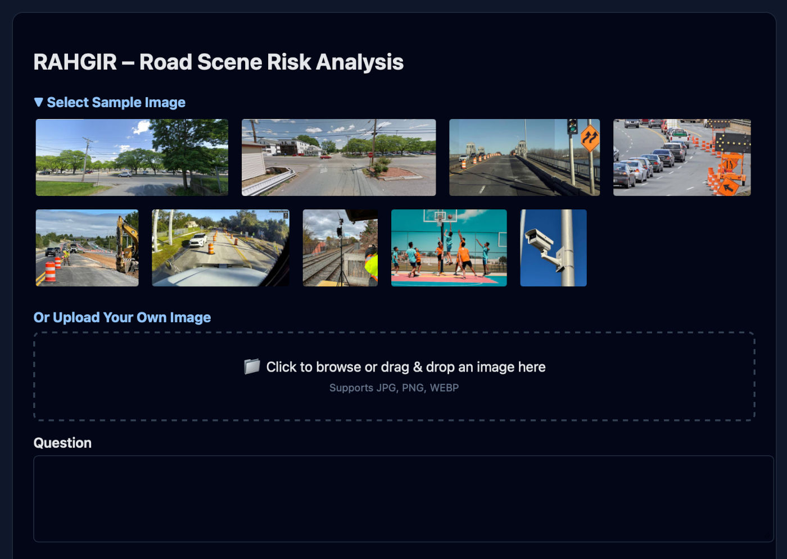
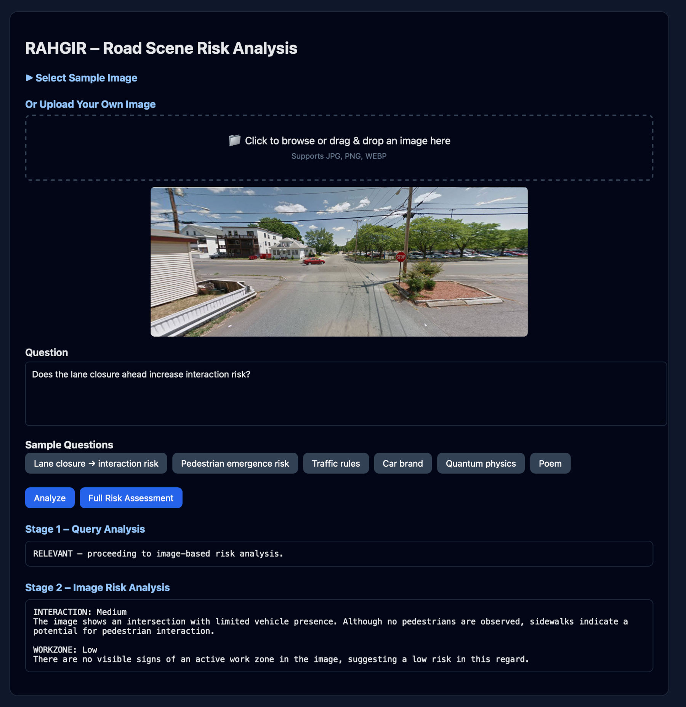
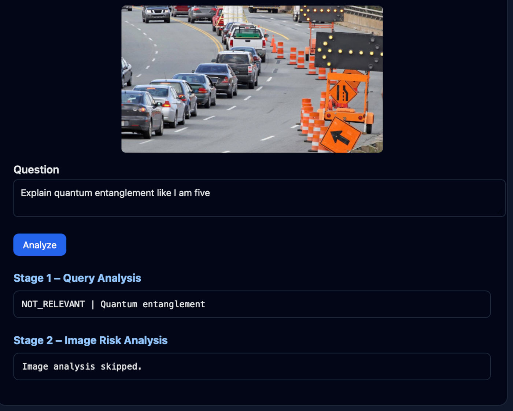
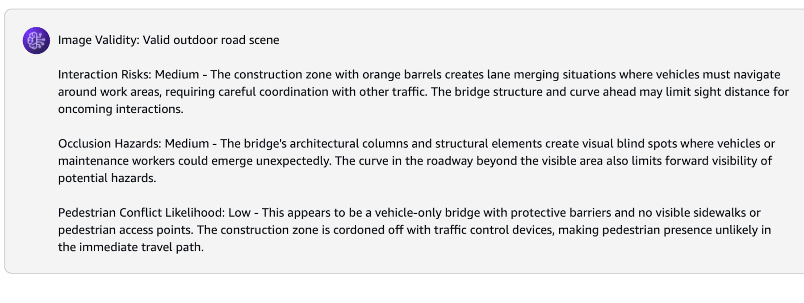

RAHGIR VLM: Road-scene Analysis for Hazards with Grounded Interactive Risk Reasoning
Project Timeline: 2026-2028 (Ongoing)
Links
RAHGIR is a policy-conditioned, domain-specialized vision–language reasoning system designed to analyze forward-facing ego-vehicle road scenes and produce structured, probabilistic assessments of traffic risk under partial observability.

What RAHGIR Does
- Converts a single road image into explicit risk assessments
- Reasons from the ego-vehicle perspective using traffic-domain constraints
- Produces calibrated Low / Medium / High risk estimates with justifications
Key Capabilities
- Policy-conditioned hazard reasoning grounded in visual evidence
- Explicit modeling of interaction risk between traffic agents
- Occlusion-aware risk inference under incomplete observability
- Structured, evaluation-friendly outputs (not free-form captions)
Reasoning Modes
- Observed-agent risk: Risk estimation conditioned on visible road users
- Hypothetical-agent risk: Risk estimation under potential agent emergence from occluded regions
RAHGIR is implemented on AWS with explicit reasoning policies, guardrails, calibration layers, and an evaluation harness.
Two-Stage Query Processing
RAHGIR employs a cost-efficient two-stage architecture to handle user queries:
- Stage 1 – Query Relevance Analysis: A lightweight text-only model determines if the query is relevant to road safety and risk assessment
- Stage 2 – Vision-Language Risk Analysis: Only relevant queries proceed to the expensive VLM for image-based risk assessment
This approach prevents costly VLM calls for off-topic queries while maintaining fast response times for legitimate safety questions.
Design Evolution
Initially, RAHGIR was tested with a single-stage approach where users submitted fully structured queries directly to the VLM. However, this proved inefficient and inflexible. The current two-stage architecture addresses these limitations by:
- Accepting natural language queries: Users can ask questions in plain English without formatting requirements
- Extracting key topics: Stage 1 identifies the intent and key topics (e.g., INTERACTION, WORKZONE, PEDESTRIAN, OCCLUSION) from the user's query
- Structuring queries internally: The system automatically reformats and structures the query with appropriate context before passing it to the VLM
- Filtering irrelevant queries: Non-relevant queries are rejected at Stage 1, saving VLM costs entirely
Query Filtering Examples
The system intelligently filters non-relevant queries before invoking the VLM:

This pre-filtering is crucial because some queries may superficially appear related to transportation or safety but are actually off-topic. Since VLM queries are expensive, this cheap text-based pre-check significantly reduces operational costs while maintaining system responsiveness.
Testing on AWS Bedrock
In addition to testing via the AWS Bedrock console, the VLM was evaluated through programmatic and workflow-level testing to assess its behavior under realistic usage conditions. We also conducted human-in-the-loop validation, manually reviewing and validating the model’s outputs across 100 representative test cases to assess accuracy, relevance, and safety. We plan to construct a dedicated evaluation dataset and implement automated testing and scoring pipelines to enable repeatable benchmarking, regression testing, and continuous performance monitoring as the system evolves.

Contextual Understanding
RAHGIR demonstrates ability to:
- Recognize road-relevant scenes: Correctly identifies work zones with appropriate risk levels
- Reject non-road scenes: Recognizes when an image doesn't depict a road environment
- Adapt to transportation contexts: Understands railroad tracks as a transportation risk domain
- Provide nuanced assessments: Distinguishes between interaction risks and work zone risks with separate justifications
AWS Guardrails
RAHGIR implements comprehensive AWS Bedrock Guardrails to ensure safe and appropriate system behavior:
- Content filtering: Blocks toxic, harmful, or inappropriate text and image inputs
- Input validation: Ensures queries and images meet safety and quality standards
- Output moderation: Validates VLM responses before returning to users
- Policy enforcement: Maintains domain-specific constraints on reasoning and outputs
AWS Architecture
RAHGIR is deployed as a serverless application on AWS, leveraging multiple managed services for scalability, reliability, and cost-efficiency:
Core Services
- Amazon Bedrock: Hosts the vision-language models (Claude 3 Haiku) for both query analysis and image-based risk assessment
- AWS Lambda: Executes the two-stage analysis pipeline with automatic scaling and pay-per-use pricing
- Amazon API Gateway: Provides RESTful API endpoint for client requests with request validation and throttling
- Amazon S3: Hosts the static web interface with public read access
- Amazon CloudFront: Content delivery network (CDN) with global edge locations for low-latency access
Benefits of This Architecture
- Serverless: No infrastructure management, automatic scaling, pay-per-use pricing
- Cost-efficient: Two-stage filtering prevents expensive VLM calls for irrelevant queries
- Secure: Bedrock Guardrails, API Gateway throttling, CloudFront HTTPS
- Scalable: Handles traffic spikes automatically without manual intervention
- Global: CloudFront CDN provides low-latency access worldwide